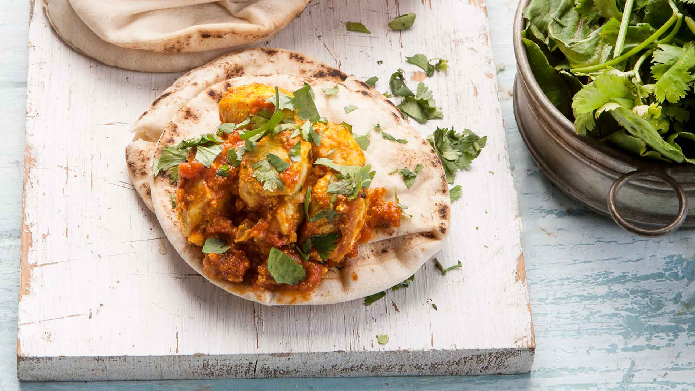

Ινδικό κοτόπουλο ταντούρι

- Σε ένα μεγάλο μπολ, ανακατεύουμε το γιαούρτι, το χυμό λεμονιού, το σκόρδο (ψιλοκομμένο ή λιωμένο), τον κουρκουμά, το σαφράν, το κύμινο, το καγέν, το αλάτι, το πιπέρι και το τριμμένο τζίντζερ για να φτιάξουμε τη μαρινάδα.
- Κόβουμε τα φιλέτα κοτόπουλου σε μεγάλες λωρίδες ή κομμάτια και τα προσθέτουμε στη μαρινάδα, ανακατεύοντας καλά για να καλυφθούν πλήρως. Σκεπάζουμε το μπολ και το αφήνουμε στο ψυγείο για τουλάχιστον 2 ώρες, ή ακόμα καλύτερα για όλη τη νύχτα.
- Περνάμε τα μαριναρισμένα κομμάτια κοτόπουλου στα σουβλάκια, εναλλάσσοντας με δαχτυλίδια από το κόκκινο κρεμμύδι.
- Προθερμαίνουμε τη σχάρα ή το γκριλ σε μέτρια φωτιά και ψήνουμε τα σουβλάκια για περίπου 6-8 λεπτά από κάθε πλευρά, μέχρι να είναι καλά ψημένα και χρυσαφένια.
- Αφαιρούμε τα σουβλάκια από τη σχάρα και τα πασπαλίζουμε με φρέσκο ψιλοκομμένο κόλιαντρο. Σερβίρουμε με ρύζι ή πίτα και μια δροσερή σάλτσα γιαουρτιού αν θέλουμε.
 Spoon Theory
Spoon Theory